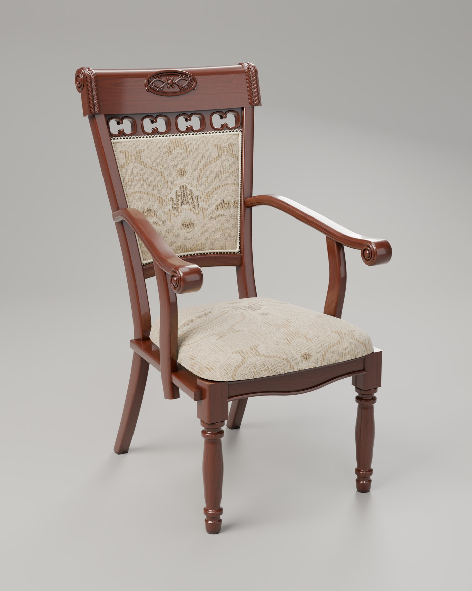
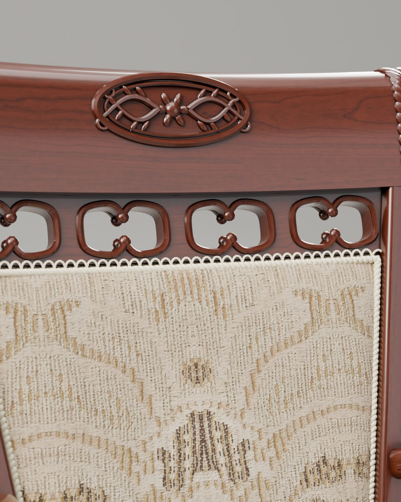
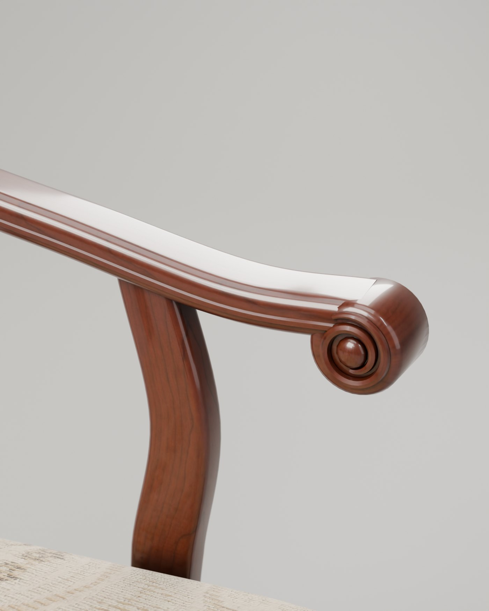
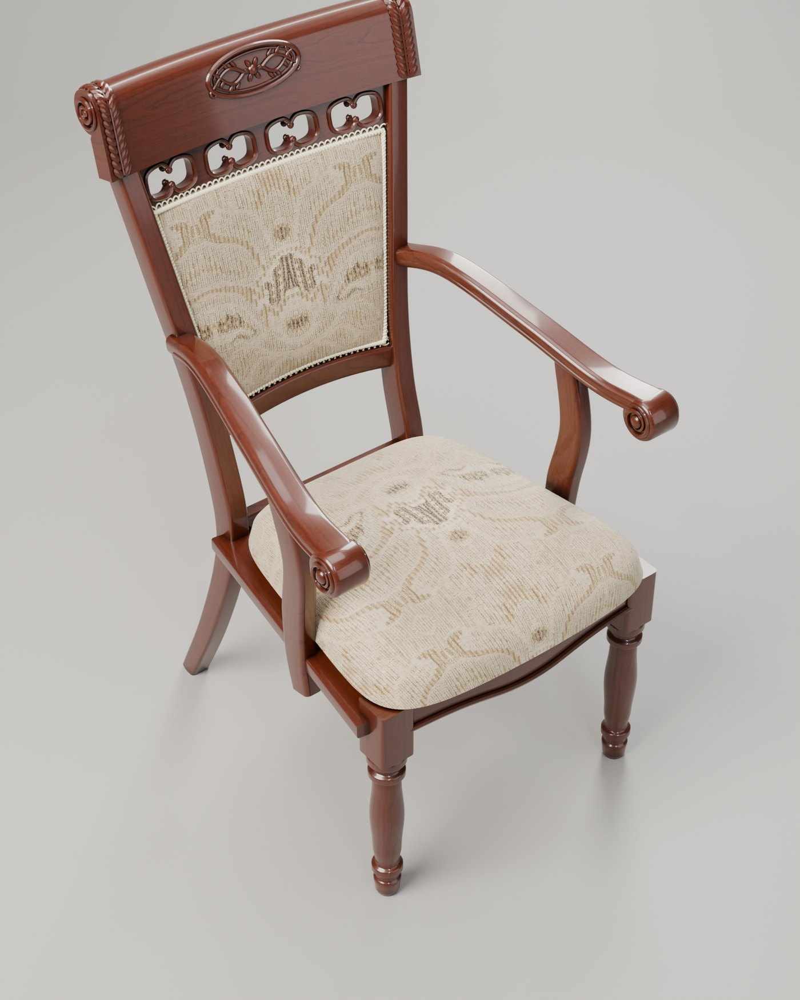
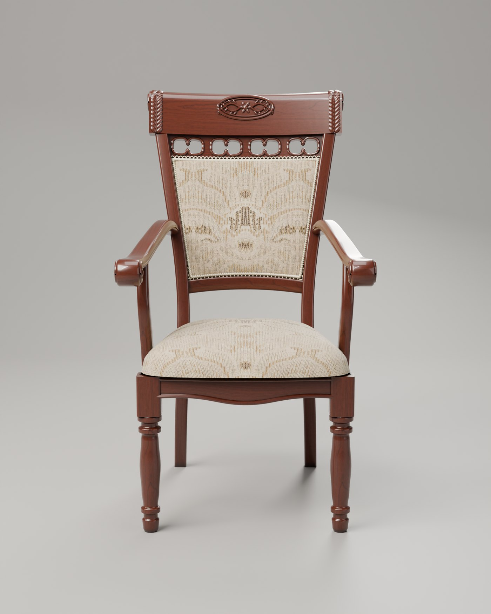
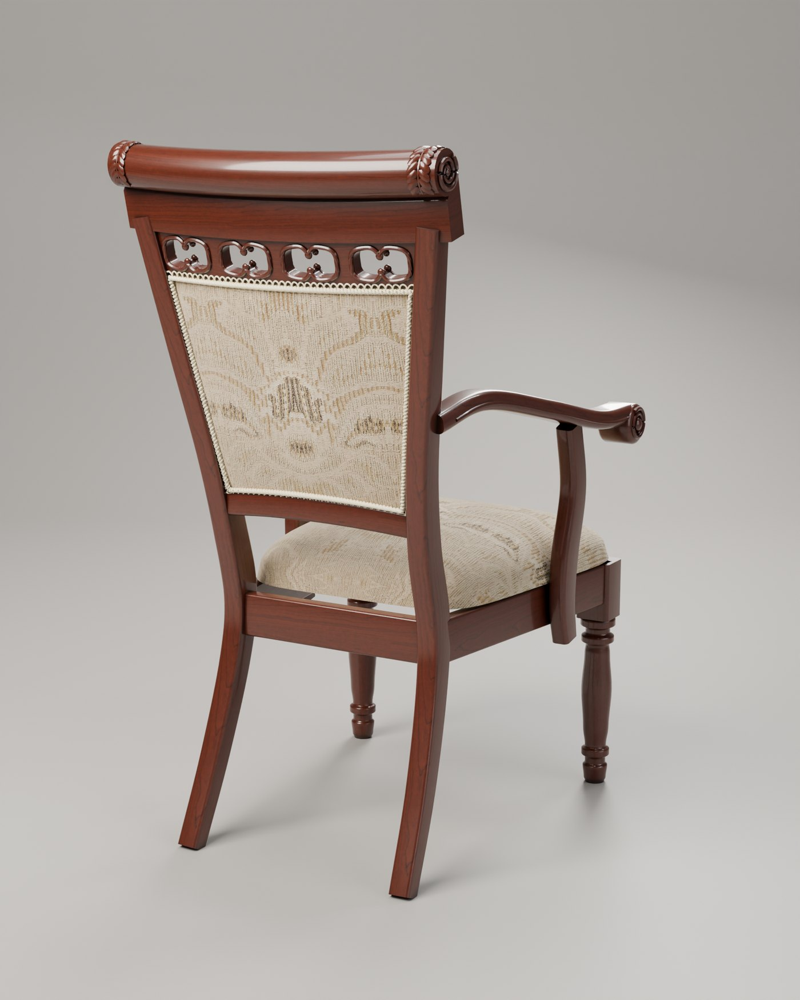

The heritage armchair, rebuilt in three dimensions.
This is an experiment. The chair is mine — an old carved armchair at home — and all I gave it was eleven ordinary phone photographs. No scanner, no studio, no measurements. What came out is a complete 3D model — every scroll, the pierced fretwork, the carved medallion, the looped gimp trim, and the original damask, woven back from a close-up of the fabric itself.
- Frame
- Stained hardwood, high-build lacquer, antique glaze in the carving
- Upholstery
- Cream & gold jacquard damask, scalloped gimp braid front and back
- Size
- W 65 · D 76 · H 112 cm — seat height 50 cm (estimated from photographs)
- Model
- 158k triangles · 2 MB · runs in a phone browser
Light does the selling.
The live model above is for turning and inspecting. These stills are path-traced — real light bouncing through lacquer and cloth — for the moments a photograph is what's needed.






From a hallway snapshot to a product asset.
Read the photographs
Proportions, joinery and every carved element are measured off ordinary phone pictures — no scanner, no studio visit.
Model it as it was built
Turned legs are turned, rails are swept, the fretwork is pierced. The fabric is reconstructed from a close-up of the real weave.
One model, every use
The same file drives the interactive viewer, the studio stills, and augmented reality in a customer's own room.